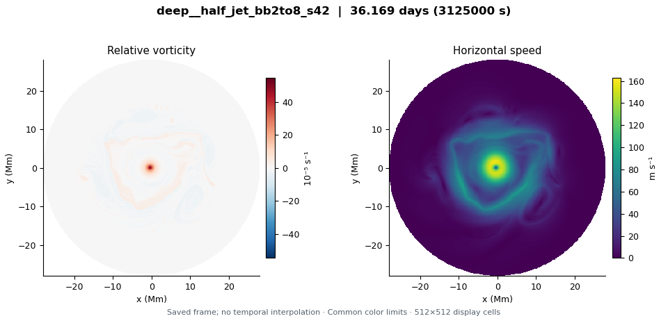
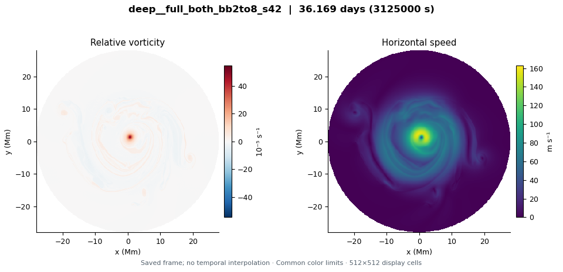

deep__half_jet_bb2to8_s42
LD 3.2 Mm · Prescribed deep flow: upper circular jet × 0.5; upper cyclone × 0 · 36.169 model days
Explore this run →Four 1024² QG integrations compare a half-strength deep jet, a full-strength deep jet, a deep central cyclone, and their combination. Each starts from the same upper-layer flow with broadband modes 2–8 (seed 42), deformation radius 3200 km, and convection off, and runs for 3,125,000 s (36.17 Earth days). Compare with the reference broadband run in the formation collection. These are regularized QG analogues of the 2017 shallow-water setup; completion does not establish stability or agreement with Saturn’s observed propagation speed.
These are exploratory simulations, not established Saturn hexagons. Read the initial condition and configuration differences before comparing runs.

LD 3.2 Mm · Prescribed deep flow: upper circular jet × 0.5; upper cyclone × 0 · 36.169 model days
Explore this run →LD 3.2 Mm · Prescribed deep flow: upper circular jet × 1; upper cyclone × 0 · 36.169 model days
Explore this run →LD 3.2 Mm · Prescribed deep flow: upper circular jet × 0; upper cyclone × 1 · 36.169 model days
Explore this run →
LD 3.2 Mm · Prescribed deep flow: upper circular jet × 1; upper cyclone × 1 · 36.169 model days
Explore this run →